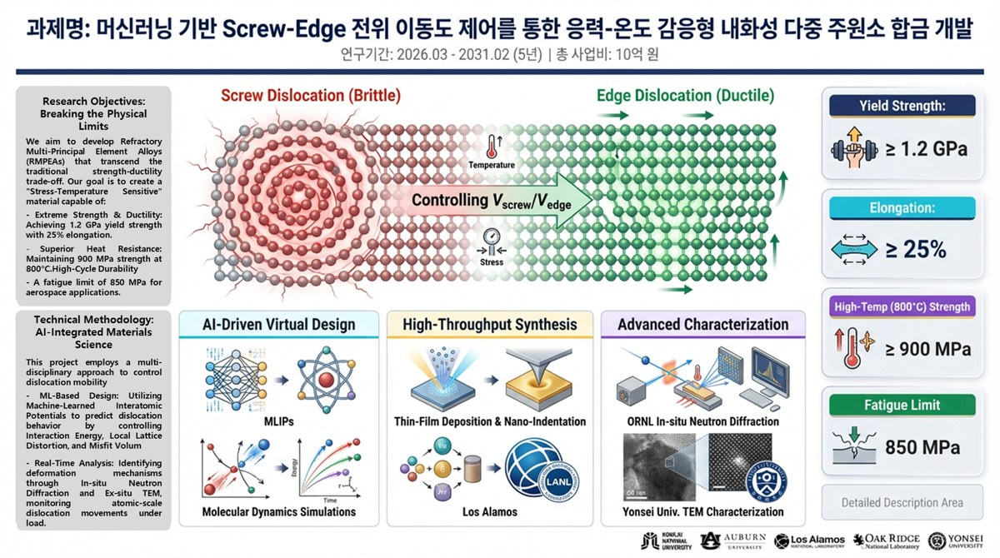
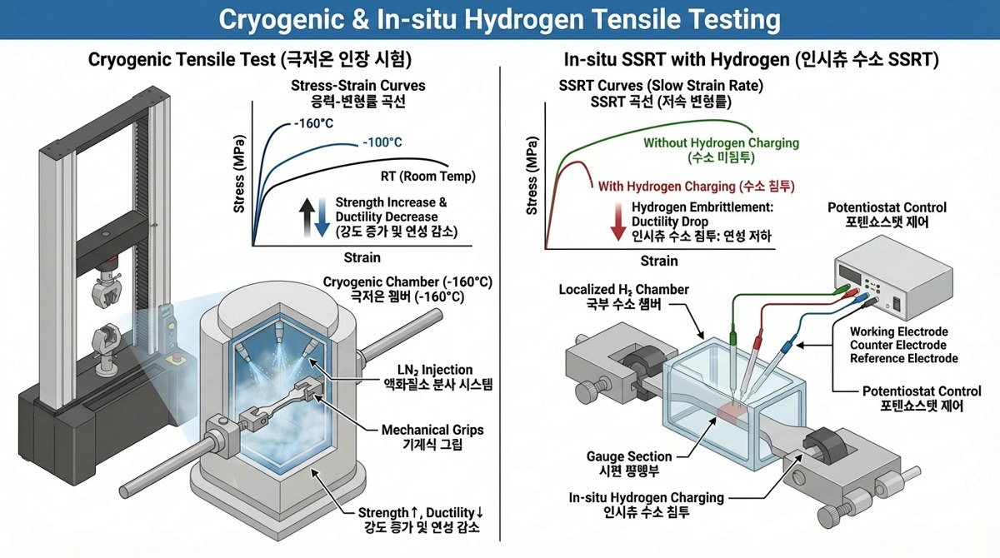
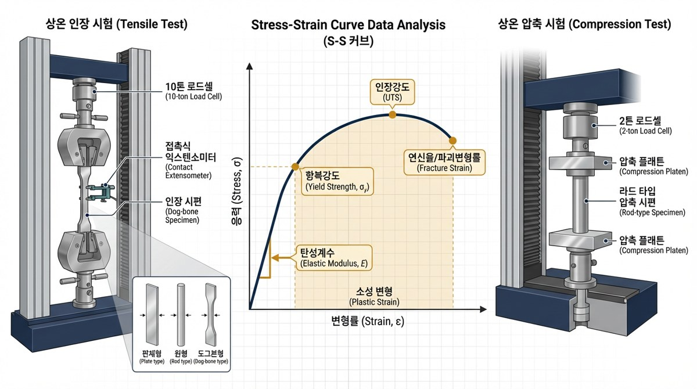
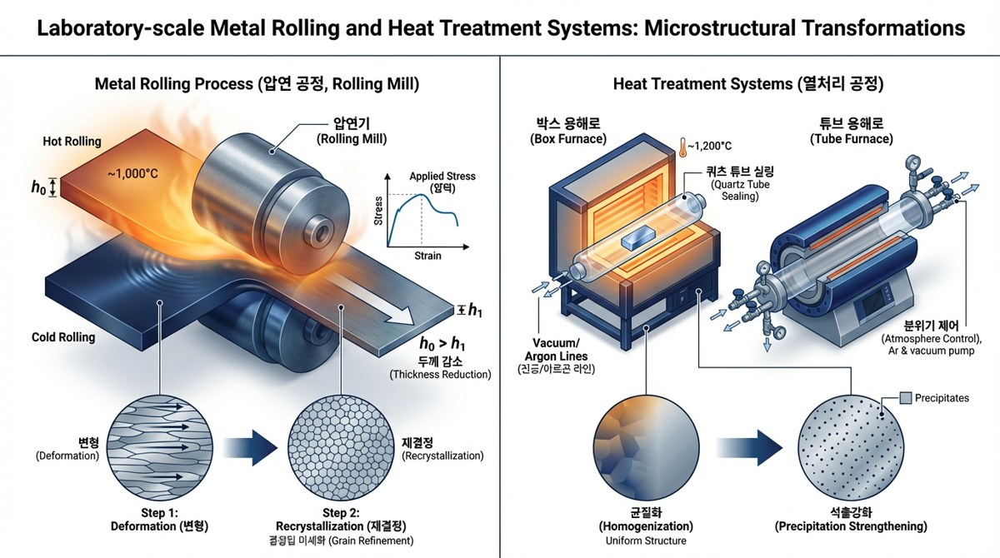

합금 설계 및 공정 제어 (Alloy design and processing)
Arc/induction melting, 열처리, 압연 공정을 기반으로 ferritic steels, Ni-based superalloys, Ti/Zr alloys, HEA 계 합금의 공정-조직-물성 상관관계를 설계합니다. Processing routes are linked to microstructure and target properties.
연구분야 (Research)
ASML은 해수·수소·고온 등 극한 사용환경에서 구조재료의 기계적 물성, 내구성, 열화 거동과 수명을 예측하는 연구를 수행합니다. We study mechanical performance, durability, degradation, and lifetime prediction of structural materials for marine, hydrogen, high-temperature, and other extreme service environments.
Research Areas
Research Visuals




How We Work
합금 제조, 열처리, 압연 및 후처리 조건을 설계합니다.
상분율, 석출, 결정립, 결함과 균열 경로를 분석합니다.
강도, 연성, 파괴, 고온 안정성, 내식·내구성, 수소 환경 거동을 평가합니다.
문헌 및 실험 데이터를 정리해 합금 설계, 물성 예측, 열화 메커니즘 해석과 수명 예측에 활용합니다.